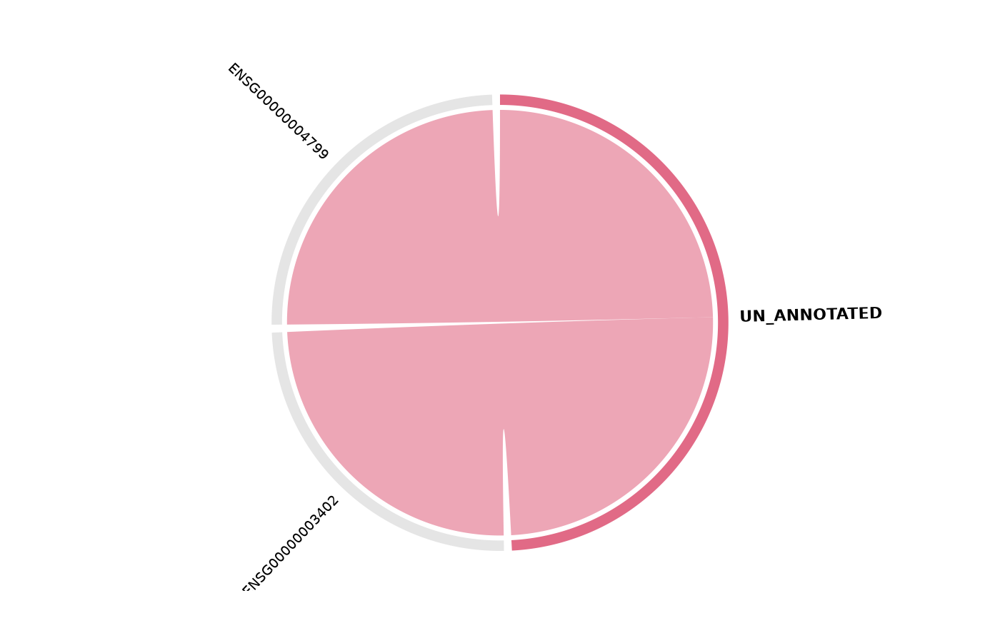
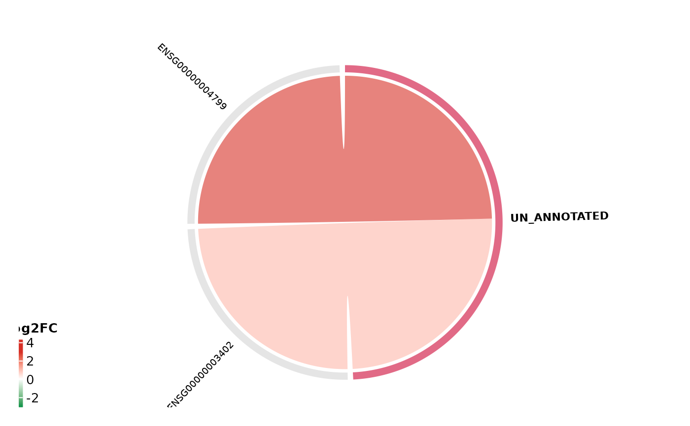

Chord diagram of enrichment gene–pathway relationships
get_enrichment_chord.RdDraws a chord diagram linking genes to the enriched pathways they belong to. Chords can be coloured by fold-change, regulation direction, or source pathway.
Usage
get_enrichment_chord(
x,
vista = NULL,
sample_comparison = NULL,
pathways = NULL,
top_n = 8,
pathway_column = c("Description", "ID"),
gene_column = c("auto", "geneID", "core_enrichment"),
gene_sep = "/",
min_pathways = 1,
max_genes = 50,
gene_order_by = c("none", "foldchange", "abs_foldchange"),
gene_id_column = NULL,
display_id = NULL,
color_by = c("foldchange", "regulation", "pathway"),
up_color = "#D73027",
down_color = "#1A9850",
other_color = "grey70",
pathway_colors = NULL,
transparency = 0.4,
gap_degree = 2,
label_cex = 0.7,
title = NULL
)Arguments
- x
An
enrichResult,gseaResult, orcompareClusterResultfrom clusterProfiler, or a list containing anenrichelement (e.g. output ofget_msigdb_enrichment()).- vista
Optional
VISTAobject. Required whencolor_byis"foldchange"or"regulation".- sample_comparison
Character scalar naming the DE comparison in
vistato pull log2FC values from. Required whenvistais supplied.- pathways
Optional character vector of pathway names to include. Matches against
pathway_column.- top_n
Number of top pathways to display when
pathwaysisNULL(default8).- pathway_column
Column in the enrichment result to match pathway names:
"Description"(default) or"ID".- gene_column
Column storing gene members:
"auto"(default),"geneID", or"core_enrichment".- gene_sep
Delimiter separating genes in
gene_column(default"/").- min_pathways
Minimum number of pathways a gene must appear in to be shown. Set to
2to display only hub genes shared across terms. Default1(show all genes).- max_genes
Maximum number of genes to display (default
50). A safety cap for readability.- gene_order_by
Order of gene sectors in the chord plot:
"none"(default),"foldchange"(descending log2FC), or"abs_foldchange"(descending absolute log2FC). Fold-change based ordering requiresvista+sample_comparison.- gene_id_column
Column in
rowData(vista)used to map enrichment gene IDs tovistarownames (for FC lookup).- display_id
Column in
rowData(vista)providing display-friendly gene names.- color_by
How to colour chords:
"foldchange"(continuous gradient),"regulation"(Up / Down / Other), or"pathway"(source pathway). Falls back to"pathway"whenvistaisNULL.- up_color
Colour for up-regulated genes (default
"#D73027").- down_color
Colour for down-regulated genes (default
"#1A9850").- other_color
Colour for non-significant genes (default
"grey70").- pathway_colors
Optional named vector of colours for pathway sectors. When
NULL, colours are generated from an HCL palette.- transparency
Chord transparency, 0–1 (default
0.4).- gap_degree
Gap between sectors in degrees (default
2).- label_cex
Text size for sector labels (default
0.7).- title
Optional plot title.
Value
Invisibly returns a list with:
- gene_data
Tibble of genes with pathway membership and (optionally) fold-change values.
- hub_genes
Character vector of genes appearing in two or more pathways.
The chord diagram is drawn as a side effect.
Details
The plot reveals hub genes (those driving multiple enriched terms) and
pathway redundancy (terms sharing many genes).
This complements get_enrichment_plot() (which shows significance) and
get_pathway_heatmap() (which shows expression patterns).
Examples
# \donttest{
data("count_data", package = "VISTA")
data("sample_metadata", package = "VISTA")
vista <- create_vista(
counts = count_data[1:200, ],
sample_info = sample_metadata[1:6, ],
column_geneid = "gene_id",
group_column = "cond_long",
group_numerator = "treatment1",
group_denominator = "control"
)
#> estimating size factors
#> estimating dispersions
#> gene-wise dispersion estimates
#> mean-dispersion relationship
#> final dispersion estimates
#> fitting model and testing
msig <- get_msigdb_enrichment(
vista,
sample_comparison = names(comparisons(vista))[1],
regulation = "Up", from_type = "ENSEMBL"
)
#>
#> Using human MSigDB with ortholog mapping to mouse. Use `db_species = "MM"` for mouse-native gene sets.
#> This message is displayed once per session.
# Simple: pathway-coloured chords
get_enrichment_chord(msig)
#> Warning: `vista` and `sample_comparison` are required for "foldchange" colouring.
#> Falling back to "pathway".

# With fold-change colouring
get_enrichment_chord(
msig, vista = vista,
sample_comparison = names(comparisons(vista))[1],
color_by = "foldchange"
)

# Hub genes only (shared across 2+ pathways)
pw_long <- get_pathway_genes(msig, return_type = "long")
if (any(table(pw_long$gene) >= 2)) {
get_enrichment_chord(msig, min_pathways = 2)
}
# }